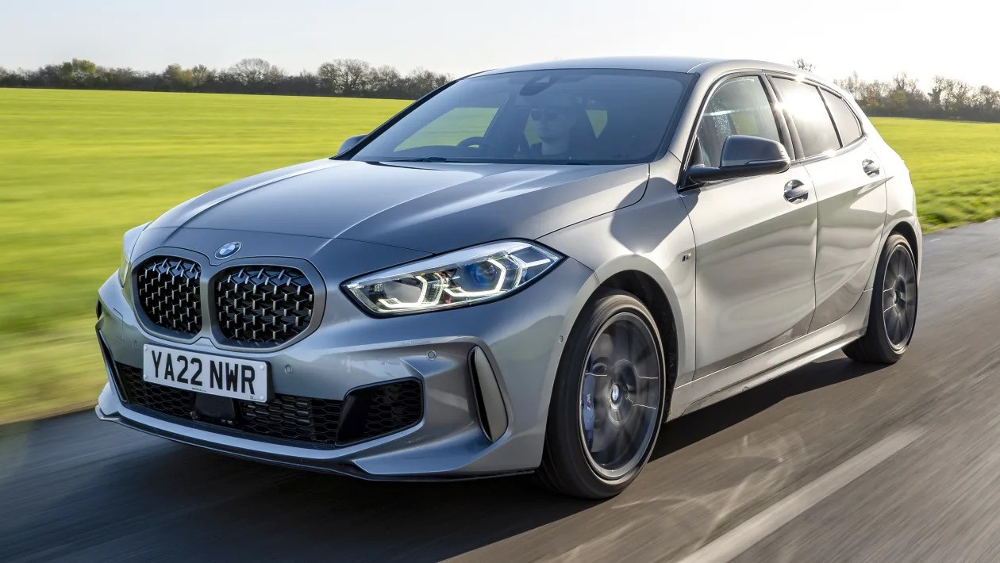
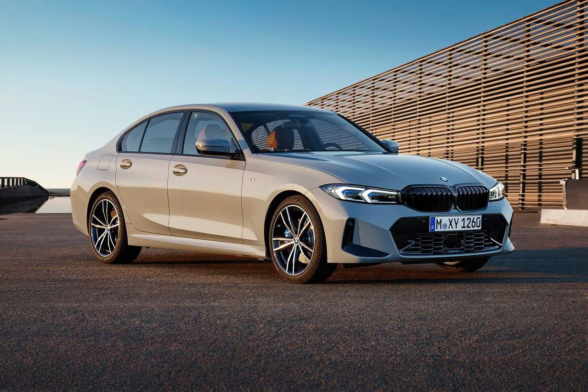
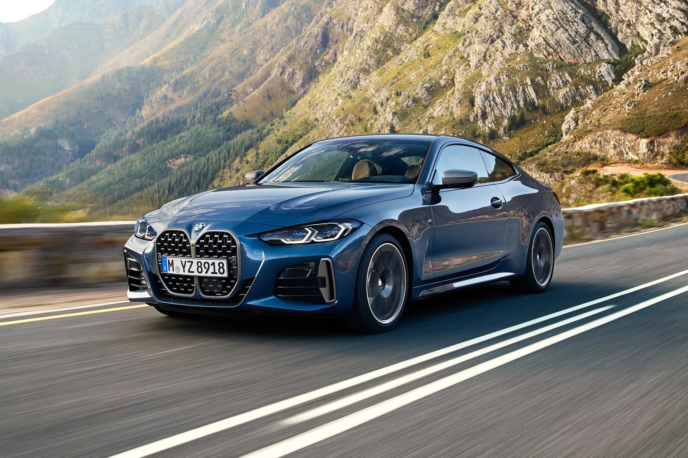
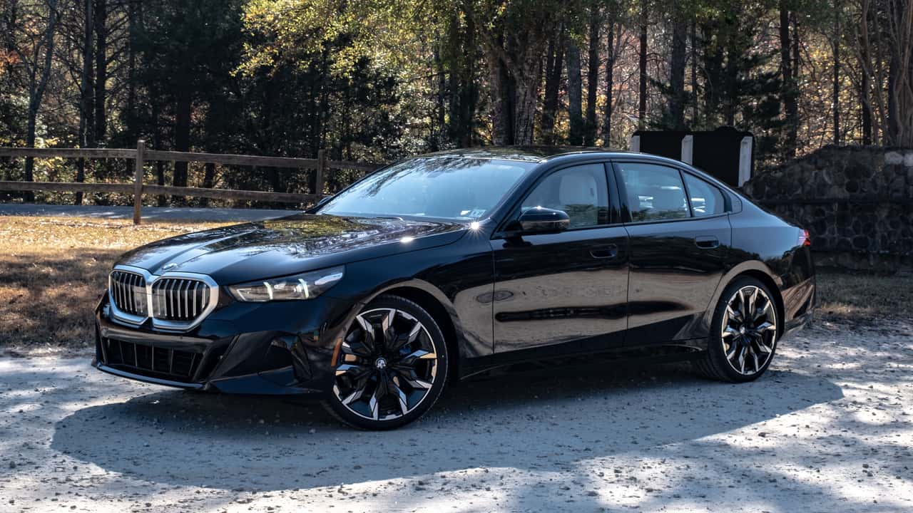
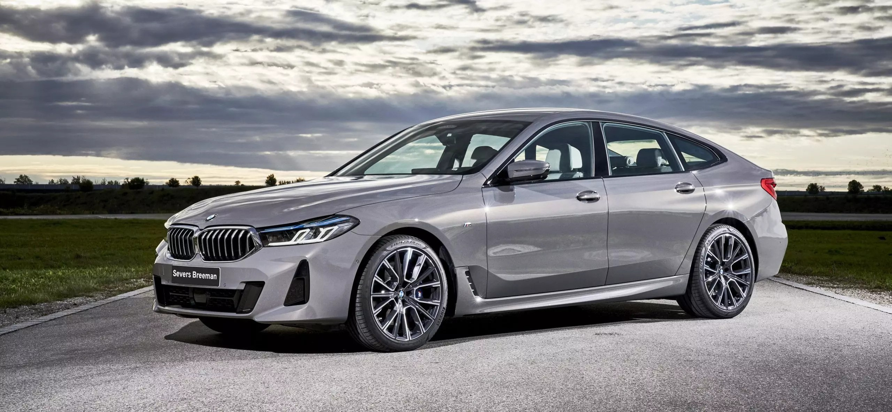
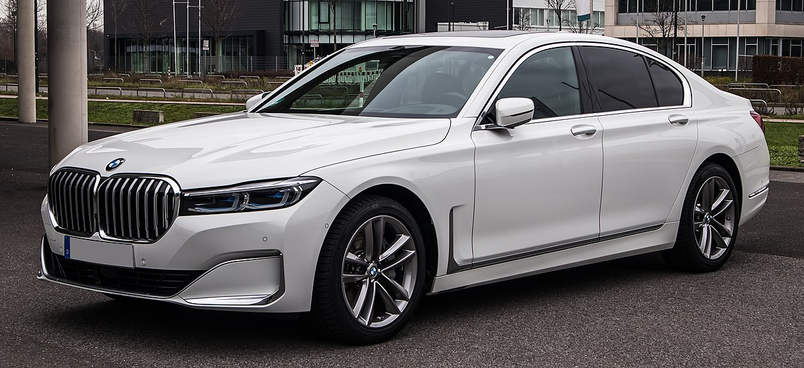
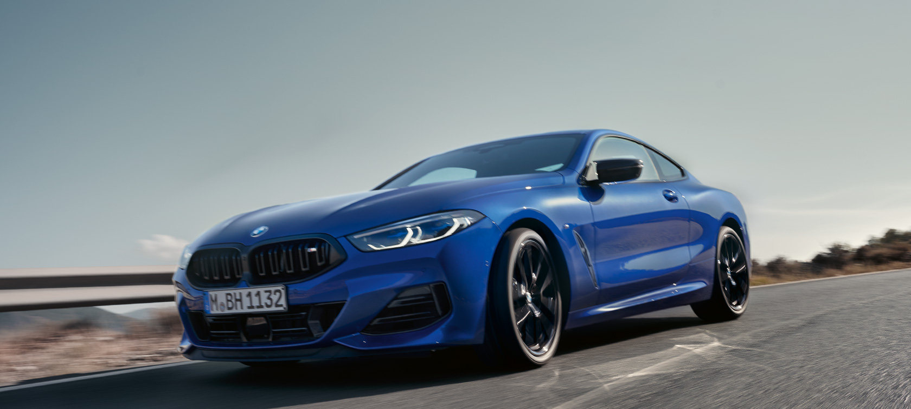
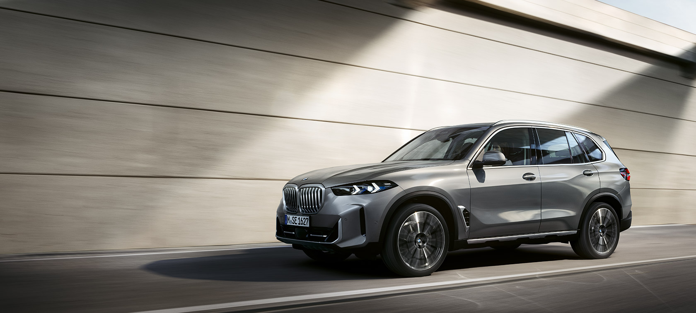
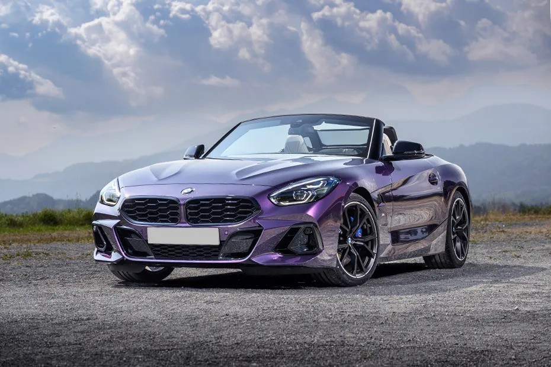

BMW 1-serien är en kompakt premiumbil som kombinerar smidig stadskörning med sportig prestanda. Den kompakta designen gör den idealisk för urbana miljöer, och den erbjuder samtidigt BMW:s karakteristiska kördynamik.
2-serien representerar en bred palett av modeller, inklusive coupéer, cabrioleter och aktiv tourer. Denna serie ger köparna möjlighet att välja en modell som passar deras specifika behov och önskemål.

BMW's 3-serien är en ikon inom premiumsegmentet, känt för sin sportiga prestanda och eleganta design. Den kombinerar körnöje med avancerade teknologier och är en referenspunkt för de som söker en dynamisk och komfortabel körupplevelse.
Med sin mer utmanande design och sportigare inställning är BMW 4-serien en kraftfullare version av 3-serien. Den finns som coupé, cabriolet och gran coupé och riktar sig till dem som söker extra stil och prestanda.
BMW 5-serien är en lyxig sedan som kombinerar elegans med avancerade teknologier och överlägsen komfort. Den är perfekt för dem som vill förena prestanda med en hög grad av lyx och utrustning.
6-serien är känt för sin överlägsna prestanda och elegans. Den finns som gran coupé, cabriolet och gran turismo och erbjuder en perfekt balans mellan komfort och sportighet.
BMW 7-serien representerar toppen av lyx och innovation inom BMW:s modellutbud. Den här lyxbilen har avancerade teknologier, förstklassig komfort och en imponerande kördynamik.
8-serien är en exklusiv modellserie som kombinerar lyx med sportig prestanda. Finns som coupé, cabriolet och gran coupé och riktar sig till dem som söker det ultimata inom design och prestanda.
BMW's X-serie representerar den framstående linjen av sportiga och lyxiga SUV:ar. Med imponerande terrängkörningsförmåga och lyxiga interiörer erbjuder X-serien en elegant kombination av prestanda och mångsidighet.
BMW's Z-serie representerar en passionerad linje av sportbilar som förenar stil och prestanda. Med modeller som Z4 Roadster erbjuder Z-serien en unik körglädje och öppen himmel-körning. Den aerodynamiska designen och kraftfulla motorerna gör varje modell till ett mästerverk på vägen.
